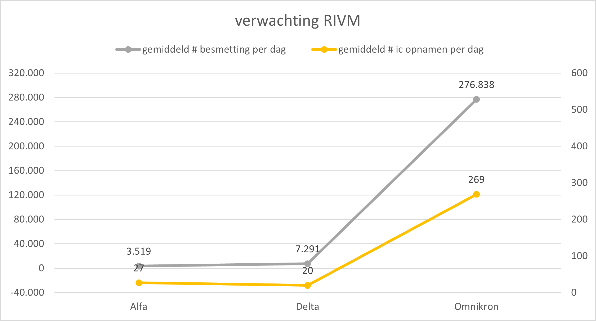

December 2021
Angst is een slechte raadgever, handelingen die daaruit voortkomen beloven niet veel goeds. In deze tijd van corona kun je goed zien hoe angst werkt. In dit blog wil ik je meenemen naar een beter begrip van angst en een manier om niet uit angst te reageren, maar te acteren uit vertrouwen.
Handelen uit angst komt voort uit afkeer, in de huidige actualiteit is dit afkeer van het coronavirus. Wie heeft er niet iets tegen? Door je afkeer tegen dit virus ontstaat er angst voor je dood. Afkeer op haar beurt komt voort uit verlangen. Het verlangen naar het tegenovergestelde, verlangen naar leven en naar zoals het was. We hebben zelfs al een naam aan dit verlangen gegeven. Verlangen we niet allemaal terug naar 'het oude normaal'? Afkeer en verlangen zijn de twee drijfveren van ons ego, we willen het liefst iets waar we naar verlangen en we willen liever niet dat iets ons overkomt waar we afkeer van hebben. Dat is hoe ons ego en onze gedachten de wereld observeren. In het kort komt het hier op neer: we vinden iets leuks als het ons verlangen bevredigd en we balen ervan als iets overkomt waar we afkeer van hebben. Het is onwetendheid die ons in deze greep houd. Onwetendheid over de werking van onze gedachten en ego en onwetendheid over de dualiteit tussen verlangen en afkeer. Als je dit op een rijtje zet, dan zie je dit gebeuren:
Het is voornamelijk de afkeer tegen het coronavirus waaraan je goed kunt zien dat de angst regeert. Kreten als 'we zijn in oorlog met het virus' en 'we moeten het virus vernietigen' geven dit heel goed aan. Onze angst voor de dood heeft een hele grote afkeer tegen het virus teweeg gebracht, zodat we daadwerkelijk gaan geloven dat het virus het probleem is van onze angst.
Maar wij weten nu beter, het virus is niet het probleem, het virus is onze afkeer. Dat komt voort uit ons verlangen naar het leven, naar 'het oude normaal'. Wat voortkomt uit de werking van ons ego en onze gedachten. Het echte probleem is onze onwetendheid, niet het virus.
Vanuit afkeer ontstaan heel veel reacties, waarmee we proberen onze angst de baas te worden. Deze reacties zijn gericht op onze afkeer, vaak buiten proporties ten opzichte van het werkelijke probleem. Zie het actuele voorbeeld in het kader.
Op zich is het geen probleem om actie te ondernemen. Laat dat duidelijk zijn. Het is juist belangrijk om actie te ondernemen, maar dan wel actie uit vertrouwen, niet reactie uit angst.
Als je kijkt naar de coronamaatregelen die momenteel genomen worden, dan zie je goed hoe sommige maatregelen door afkeer en angst buiten proporties kunnen groeien. Bijvoorbeeld ook bij de wetenschappers van het RIVM die hier iedere dag bovenop zitten. De huidige lockdown is gebaseerd op angst voor hoge besmetting en ic bezetting door de omikron variant van het virus. Er wordt nu gerekend op een ic bezetting met 4300 coronapatiënten en daar wordt op gereageeerd met een lockdown. Hoe realistisch is dat?
Als je eenvoudig kijkt naar de cijfers van de alfa en delta variant en je volgt de trend van het virus dan zie je dat dit eigenlijk onmogelijk is met een land van maar 17 miljoen inwoners. Laat ik je even meenemen.
Terwijl de alfa variant dominant was, vanaf maart 2020 tot juni 2021, waren er 1.689.106 besmettingen in Nederland en 12.782 mensen hebben op de ic gelegen volgens cijfers van het RIVM. Het percentage van de besmette mensen die op de ic komen was daarmee 0.76%. Gemiddeld waren dat 3519 besmettingen en 27 mensen op de ic per dag.
Terwijl de delta variant dominant was, vanaf juli 2021 tot december 2021 waren er 1.312.355 besmettingen in Nederland en 3.557 mensen hebben op de ic gelegen volgens cijfers van het RIVM. Het percentage van de besmette mensen die op de ic komen was daarmee 0.27%. Gemiddeld waren dat 7291 besmettingen en 20 mensen op de ic per dag.
Als je deze lijn doortrekt dan zou je verwachten dat er door omnikron per dag meer mensen besmet raken, maar dat er minder mensen op de ic terecht komen.
Als dezelfde trend zich doorzet, dan zou je kunnen concluderen dat er in januari en februari 2022 in totaal 1.019.637 besmettingen komen en 990 mensen op de ic. Het percentage van de besmette mensen die op de ic komen daalt dan naar 0.10%. Gemiddeld zijn dat 14.995 besmettingen en 15 mensen op de ic per dag. Zie onderstaande grafiek voor een visualisatie van deze trend.
Als je twee keer zo voorzichtig bent, en verwacht dat de daling een beetje afvlakt, dan worden dit de cijfers: 2.039.275 besmettingen en 3.959 mensen op de ic. Het percentage van de besmette mensen die op de ic komen daalt dan naar 0,19% en gemiddeld zijn dat 29.989 besmettingen en 58 mensen op de ic per dag.
Maar dat is eigenlijk al niet realistisch, want dan verwachten we dat door de omnikron variant meer mensen op de ic komen dan door de delta variant, terwijl deze minder ziek zou maken.
Maar waar rekent het RIVM nu mee? 4300 mensen tegelijkertijd op de ic. Dat is tegelijkertijd meer dan alle mensen die in het totaal door de delta variant op de ic zijn gekomen! 4300 mensen op de ic, dat zijn 269 mensen op de ic per dag! Als je dan rekent met het percentage van 0.10% van de besmette mensen die op de ic komen, dan verwachten ze 276.828 besmettingen per dag! Zie onderstaande grafiek voor een visualisatie van deze cijfers.

En als je verder rekent, met een hoge besmettingsgraad van r=2 bijvoorbeeld, dan heb je die hoeveelheid besmettingen gehaald na 19 dagen. En bovendien zijn dan 5 dagen later alle 17 miljoen mensen in Nederland besmet geraakt! Dit is onmogelijk. De oplettende lezer zal opmerken dat de cijfers in de grafiek de piek weergeven die het RIVM verwacht. In werkelijkheid ligt het gemiddelde nog hoger, omdat je zo'n hoge r nodig hebt om dit aantal besmetingen te halen dat het in theorie veel verder doorstijgt.
Hoe dan? Was mijn eerste reactie. Gelukkig kwam later het inzicht dat dit een mooi voorbeeld is van de impact van angst en afkeer en daarmee een mooi voorbeeld voor dit blog. Dit is buiten proportioneel met ongeveer een factor 20!
Dit alles wil niet zeggen dat je geen actie moet ondernemen en dit is ook geen ondermijning van de acties van het RIVM. Je weet simpelweg niet hoe de toekomst eruit gaat zien. Alleen zouden we de actie niet vanuit angst, maar vanuit vertrouwen moeten nemen. Dan worden er problemen opgelost in plaats van meer angst en afkeer gezaaid. Hoe dat werkt lees je hieronder.
Als je actie wilt nemen vanuit vertrouwen, dan betekent dat, dat je je niet laat leiden door je omgeving. Je zegt dan niet, dat virus zorgt ervoor dat het slecht met mij gaat. De overheid heeft mij beroofd van mijn vrijheid. De niet-gevaccineerden zorgen ervoor dat er zoveel ic bedden bezet zijn. Dat zijn allemaal afscheidingen van jouzelf met anderen. Allemaal ego, want jij vindt dat jou iets wordt aangedaan door iets of iemand anders.
Doe een stapje terug, wacht even met reageren. Als je je ego gedachten laat varen, en werkelijk stil kunt zijn, dan komen er gedachten vanuit jouw eigen wezen naar boven. Je intuïtie gaat werken en die intuïtie bepaalt hoe je moet acteren in een situatie. Jij bepaalt zelf hoe je je voelt, je bent zelf verantwoordelijk. Luister naar je gevoel en neem van daaruit actie. En als je gevoel zegt dat het probleem bij anderen ligt, probeer dan nog stiller te worden, net zolang tot je ziet wat er bij jezelf in de weg zit. En dan kun je jezelf verbeteren, in plaats van dat je anderen wilt veranderen.
Geen angst, vertrouwen!
Uiteindelijk brengt dit je tot een hoger bewustzijn. Het bewustzijn dat jij en anderen hetzelfde zijn, in dezelfde wereld leven en van dezelfde eenheid deel uitmaken.
Dan ga je inzien dat je het samen MET anderen moet gaan oplossen. Ook samen MET het virus.
Samen MET anderen betekent niet dat iedereen hetzelfde moet doen. Nee, iedereen moet doen wat zijn intuïtie hem ingeeft, want het gaat om hetzelfde geheel waar we allemaal deel van uit maken. Iedereen heeft daarin evenveel waarde. Bij sommigen zegt hun gevoel bijvoorbeeld dat vaccineren noodzakelijk is, maar bij anderen is dit niet zo. Die zullen andere keuzen maken. Alles komt uit dezelfde eenheid. Dus alles is oké. De één vind dit nodig, de ander vind iets anders nodig. Accepteer dat je allebei gelijk hebt, voor jezelf. Maar ga niet anderen jouw weg laten bewandelen. Iedereen bewandelt zijn eigen weg.
Kun je je niet alleen onthechten van je ego, maar ook van je 'mens zijn', dan ga je zien dat samen MET anderen ook de mensheid overstijgt, er is meer in het geheel waar wij deel van uitmaken. Daar zijn ook andere wezens die evenveel waarde hebben. Bij je huisdier is dat misschien vanzelfsprekend. Bij planten in je huis misschien ook. Maar dit geldt dus ook voor het virus. Heeft het virus geen recht om te bestaan in de eenheid?
We zijn dus absoluut niet in oorlog met het virus, we moeten samen MET het virus een oplossing vinden. Het virus is onderdeel van de eenheid en wil ook overleven. Het mooie van de eenheid is dat die voor iedereen zal zorgen, voor jou, voor mij, maar ook voor het virus. De mens en het virus passen zich aan elkaar aan. Een virus kan namelijk niet overleven als zijn host niet overleeft. De mens zal weerstand tegen virussen opbouwen en virussen zullen zich altijd aanpassen, het is het spel van het leven. Het gaat om het vertrouwen dat je hebt in je lichaam en het leven om te doen wat nodig is.
Dat betekent dus niet dat je dingen moet laten om zelf in leven te blijven. Je intuïtie zal je ingeven wat goed voor je is. Onderneem actie! Zo is er ziekenhuiszorg nodig als je ziek bent. En zo is er ook vaccinatie nodig om de mens sneller weerstand op te laten bouwen. Zo is er sport nodig om gezond te blijven. Zo is er werk nodig om geld te verdienen. Zo is er horeca nodig om te ontspannen. Zo is er yoga, meditatie en filosofie nodig voor meer bewustzijn. En zo is alles nodig! Alles is essentieel! Alles voor het geheel, maar dat betekent niet dat alles voor ieder individu noodzakelijk is.
Het mooie van het leven is dat iedere situatie waarin je terecht komt, je de mogelijkheid geeft om je bewustzijn te verruimen en in te zien waarom je in die situatie zit, als persoon of als onderdeel van de mensheid, of als onderdeel van het grote geheel. Daar leer je van. Langzaam begin je meer te begrijpen, je onthecht van je ego, waardoor verlangen, afkeer en angst niet meer je drijfveren zijn. Zelfs de dood kan geaccepteerd worden als onderdeel van het geheel. Vraag je maar eens af. Als je dood bent, ben je dan weg uit het geheel? Zou er leven zijn als er geen dood was? Door na te denken over dit soort vragen wordt je minder onwetend. Maar realiseer je wel, er is veel meer dat wij niet weten dan wat wij wel weten.
Jij bent onlosmakelijk verbonden met alle wezens om je heen. Zorg goed voor jezelf en voor elkaar, want daar wordt het geheel en jijzelf beter van. Toch nog een beetje een kerstgedachte aan het einde van dit blog.
Meer weten over yoga?
Lees meer BOE blogs
Neem contact op
Ga naar www.bamboehuis.amsterdam